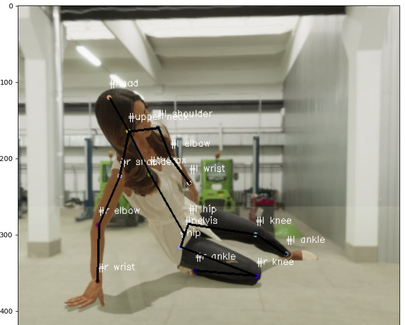
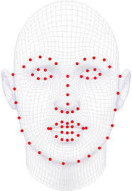
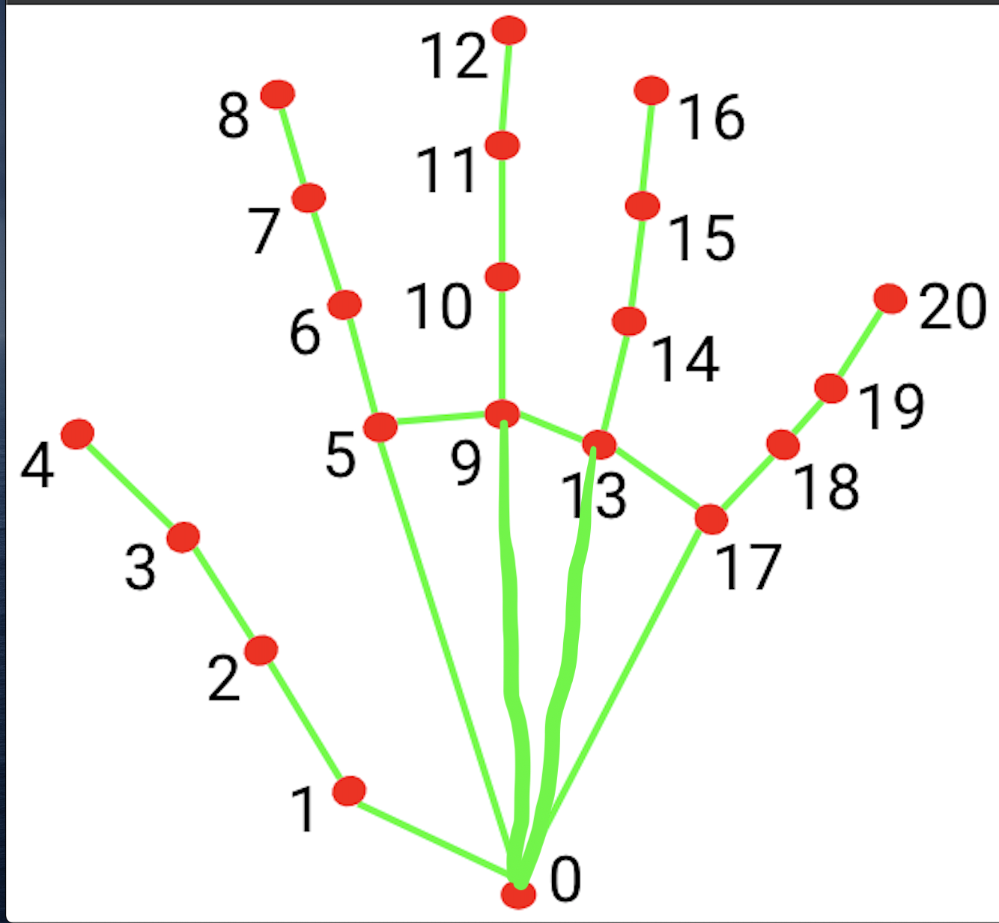
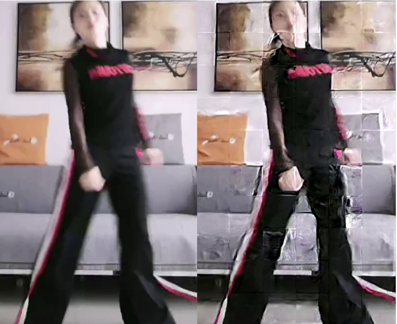
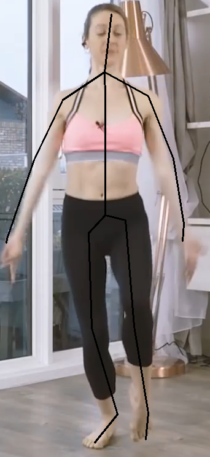

Human Pose Estimation
1 Body Estimation
 Figure 1. PE structure
Figure 1. PE structure
We evaluated several approaches for 3D Human Pose Estimation, including 3D lifting from 2D keypoints (both CNN-based and transformer-based), SMPL-based recovery methods (such as HMR and SMPLer-x), and direct 3D estimation techniques (such as stacked hourglass pose networks). SMPL-based recovery methods often suffer from long processing times, high computational costs, and minor positional offsets when mapping poses back to images. 3D lifting methods typically provide lower accuracy. On the other hand, direct 3D estimation methods frequently struggle with the lack of sufficient 3D ground truth data for training. After experimenting with various solutions, we chose direct 3D estimation for our product due to its accuracy, lower processing time requirements, and suitability for real-time mobile applications.
To address the shortage of ground truth 3D data and enhance the overall quality, we have enhanced our solution through several approaches:
- Augmentation with Synthetic 3D Data: We incorporate synthetic 3D data generated from motion capture (mocap) systems to enrich our training dataset.
- Rotoscoping Tools: We use rotoscoping tools to obtain real 3D data from video footage, providing additional ground truth for training.
- Model Structure Improvements: We refine the architecture of the vanilla model to improve its performance and accuracy.
- Two-Stage Training: We employ a two-stage training approach to incrementally improve model accuracy and robustness.
- Integration of 2D and 3D Data: We use an end-to-end training strategy that organically combines 2D and 3D data to leverage the strengths of both modalities.
- Enhanced Weight Initialization: We implement advanced weight initialization techniques to facilitate better convergence during training.
- Score-Guided Diffusion Fine-Tuning: We apply score-guided diffusion methods for fine-tuning, which helps in refining model predictions and enhancing overall performance in depth dimension.
1.1 Synthetic Data Augmentation
For the mocap data, we take the following steps to create a diverse and extensive synthetic dataset:
- Retargeting and Rendering: We retarget mocap data to different character models, including male, female, and child figures, with various outfits and body shapes. This ensures a wide range of appearances and styles.
- Scene Setup: We create a variety of environments such as beaches, offices, parks, and factories, incorporating different lighting conditions to simulate real-world scenarios.
- Camera Angles: We use multiple camera angles to capture diverse perspectives of the scenes.
- Camera Extrinsic Matrix: By applying multiple camera extrinsic matrices to the mocap's world coordinates, we generate a large volume of synthetic 3D data paired with RGB images.

Figure 3. Scene creation
1.2 Rotoscoping Tool Data Augmentation
*We collect data from users who voluntarily sign an agreement allowing us to use their data to enhance our service quality.
In our A3D pipeline, we utilize a 3D rotoscoping tool that allows users to correct inaccurate poses, providing additional ground truth for training.
 Figure 4. Rotoscoping Tool
Figure 4. Rotoscoping Tool
1.3 Model Refinement
As shown in Figure 1, our experiments revealed that incorporating a classification block and using its loss as an auxiliary loss significantly improves the model's accuracy overall. Notably, for extreme cases such as high occlusion scenarios, our model demonstrates enhanced accuracy and stability in pose estimation compared to other models. Our joint training with the classification block achieves a 99.3% accuracy in detecting occluded joints. This precise additional metadata allows us to implement post-processing techniques that further enhance the performance of our product.
1.4 Training Strategy
After conducting experiments, we found that splitting the training into two stages can further enhance the model's accuracy. In the first stage, our second hourglass block estimates a 2D heatmap instead of a 3D heatmap. Once the 2D model converges effectively, we use it as the warm-up weights for the second stage. In this stage, we integrate a case-specific weight initialization solution. For the layer responsible for generating the final 3D heatmap, which has a different shape due to increased channel size compared to the 2D version, we do not discard the original weights. Instead, we adapt these weights to initialize the expanded channels, as depicted in Figure 5
For instance, in our 2D version(First stage of training), the weight shape of the 2D scoring layer is \([16, 1024,1,1]\) where \(16\) represents the number of joints, and the kernel size \([1,1]\) indicating that this convolutional layer can be treated as a fully connected layer. The 3D scoring layer's weight shape is \([16 \times 64, 1024,1,1]\), where \(64\) represents the depth dimension, reflecting the spatial meaning.
To initialize the weights for the 3D scoring layer, we first consider each joint's weight in the 2D model as \([1, 1024]\). We need to extend this to \([64, 1024]\) to match the depth dimension. To achieve this, we calculate each joint's depth distribution from our training dataset, then apply a softmax function to ensure the distribution sums to 1. We repeatly multiply \([1, 1024]\) with \(softmax[i]\), where \(i=0,2,3...63\), then concatenate the results together. Consequently, the final weight for each joint is extended from \([1, 1024]\) to \([64, 1024]\). In other words, if we apply matrix multiplication between softmax result(\([1,64]\)) and 3D scoring layer(\([64,1024]\)), we will get a \([1,1024]\) Tensor all value equals to 2D scoring layer's weights.
 Figure 5. case-specific weight initialization
Figure 5. case-specific weight initialization
The results demonstrate that by initializing the weights using this method, the model converged significantly faster and achieved higher accuracy according to our evaluation metrics. This approach not only accelerates the training process but also enhances the model's overall performance.
1.5 Loss
To enhance the robustness of our final model in real-world scenarios, we combine both 2D and 3D data for the second stage of training. For 2D data, we compute only the 2D loss, while for 3D data, we calculate both 2D and 3D losses. Additionally, we integrate classification loss into the backpropagation process. This loss structure helps the model generalize better across different data types and improves its overall performance.
By training our model under this mechanism, it can generate highly accurate 3D keypoints for in-the-wild images. This approach ensures that the model handles diverse scenarios, including occlusions and challenging poses, making it robust and reliable for real-world applications.
1.6 Evaluaion Metrics
We tested our model using the Human3.6M test set under Protocol 1. The results showed improvements in performance, with higher accuracy in 2D and lower MPJPE in 3D pose estimation compared to previous approaches, as shown in table 1.
Table 1. Body PE metric
1.7 Score-guided diffusion fine-tuning
We found that ScoreHMR shows great potential in further improving the pose quality, particularly in providing more realistic depth estimation based on human 2D keypoints. Our process involves converting the 3D keypoints to 2D keypoints, along with providing the bounding box result. After obtaining SMPL-based vertex results, we convert these back into 3D keypoints. Using ScoreHMR, we fine-tune the original 3D keypoints with the provided 3D keypoint results. Below, we present an example illustrating the before and after effects of ScoreHMR fine-tuning on pose quality.
 Fugure 6. exmaple comparison between w and w/o scoreHMR
Fugure 6. exmaple comparison between w and w/o scoreHMR
1.8 Distriminator
We developed a discriminator specifically for pose quality assessment. The discriminator's output score serves as a realism judgment tool, helping to evaluate and ensure the generated poses align with realistic human movements. This score allows us to identify and refine poses that may appear unnatural or deviate from expected motion patterns.
 Figure 7. Distriminator Training
Figure 7. Distriminator Training
1.9 Mobile Version
We implemented distillation learning to train a smaller, lightweight model capable of running in real-time on mobile devices.
2 Face estimation
 Figure 8. face estimation pipeline
Figure 8. face estimation pipeline
For face estimation, we employ backbonds both face detection and facial landmark prediction, similar to our body estimation solution. The process starts with the face detector, which locates the human face in the image. Afterward, we use a facial landmark prediction model to obtain the key face landmarks. Each facial landmark is pre-matched to a vertex in our 4DFM model.
We solve this using a standard 3D Morphable Model (3DMM) fitting process as follows:
- Camera Parameters Estimation: Solve camera parameters using 2D landmarks and corresponding 3D vertices.
- Shape Component Estimation: Apply the camera parameters to the 3D vertices and solve for the basic shape components with 2D landmarks
- Expression Blendshapes: Solve for the expression blendshapes using 3D vertices from 2. and 2D landmarks
- Refinement: Repeat steps 1–3 for refinement over several iterations.
- Blendshape Weights: Obtain the blendshape weights from the refined model.
- Retargeting: Retarget the blendshape weights to a target face model.
- Application: Apply the blendshape weights to the target face model for the final result.

Figure 9. landmarks and their matched vectices in 4DFM
Our face landmark prediction model contain 106 keypoints including eyes and eyelids. Below is our face estimation result.
3 Fingers Estimation
 Figure 10. hand estimation pipeline
Figure 10. hand estimation pipeline
For finger estimation, the hand detector and keypoint prediction model share a similar structure to our body estimation model. It is important to note that distinguishing between left and right hands using only a hand detector is challenging. Therefore, we utilize the body estimation results to accurately assign bounding boxes to the left and right hands.

Figure 11. hand keypoints
4 Multi-person Estimation
Our multi-person pose estimation uses a bottom-up approach, following the same process as single-person pose estimation as outlined in Section 1, 2, and 3. The only addition is the inclusion of a person ID as metadata during pose generation. For details on the multi-person tracking solution, please refer to the section on #object detection and tracking
5 Some Interesting Experiments we also done
We also explore several ideas to potentially enhance pose quality:
- Motion deblurring
- Segmentation prior to pose estimation
- Using 20-joint models for improved calculation of hands and feet rotations
- Prediction focused solely on the lower body
- Pose estimation for animals
5.1 Motion deblurring
As Figure 8 shown, heatmaps can be mismatched in images affected by motion blur. To address this issue, we employed DeblurGAN, an example is depicted in Figure 9. However, as we can see, the current state-of-the-art motion deblurring models did not meet our expectations for these use cases. This approach remains a potential avenue for future improvement
 Figure 12. heatmap from motion blurred frame
Figure 12. heatmap from motion blurred frame

Figure 13. Deblured result on the right
5.2 Background Processing prior to Pose Estimation
The idea was to reduce unrelated information, or noise, from the background of an image to achieve more accurate predictions. However, we did not observe significant improvements with this approach. Additionally, it increased processing time.

5.3 Additional Joints
Due to the smaller dataset containing additional joints, the overall accuracy may be affected.

Figure 15. 20 joints
5.4 Lower Body
Figure 16. lower body
5.5 Pose Estimation for animals
Figure 17. PE for dog
6 Reference
Newell, A., Yang, K., & Deng, J. (2016, July 26). Stacked Hourglass Networks for Human Pose Estimation. arXiv.org. https://arxiv.org/abs/1603.06937
Stathopoulos, A., Han, L., & Metaxas, D. (2024, March 14). Score-guided diffusion for 3D human recovery. arXiv.org. https://arxiv.org/abs/2403.09623
Loper, M., Mahmood, N., Romero, J., Pons-Moll, G., Black, M. J., (2015, October 26). SMPL: A skinned multi-person linear model: ACM Transactions on Graphics: VOL 34, no 6. ACM Transactions on Graphics. https://dl.acm.org/doi/10.1145/2816795.2818013
Cai, Z., Yin, W., Zeng, A., Wei, C., Sun, Q., Wang, Y., Pang, H. E., Mei, H., Zhang, M., Zhang, L., Loy, C. C., Yang, L., & Liu, Z. (2024, July 28). SMPLer-X: Scaling up expressive human pose and shape estimation. arXiv.org. https://arxiv.org/abs/2309.17448
Zhou, F., Yin, J., & Li, P. (2023, December 25). Lifting by image -- leveraging image cues for accurate 3D human pose estimation. arXiv.org. https://arxiv.org/abs/2312.15636
Pavlakos, G., Zhou, X., Derpanis, K. G., & Daniilidis, K. (2017, July 26). Coarse-to-fine volumetric prediction for single-image 3D human pose. arXiv.org. https://arxiv.org/abs/1611.07828
Kupyn, O., Martyniuk, T., Wu, J., & Wang, Z. (2019, August 10). DeblurGAN-V2: Deblurring (orders-of-magnitude) faster and better. arXiv.org. https://arxiv.org/abs/1908.03826